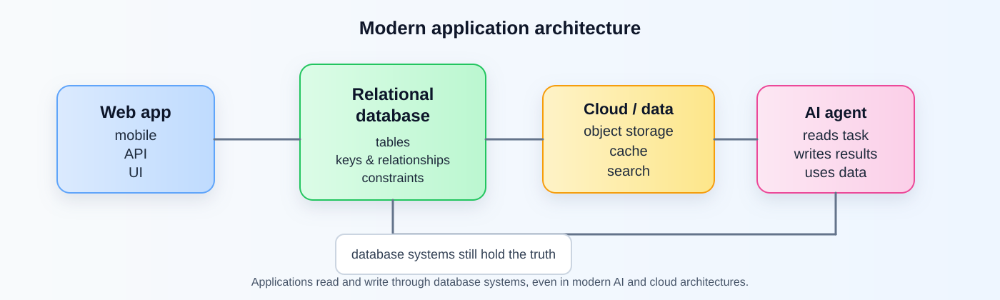

Applied Database Technologies#
Note
Databases are still at the core of modern applications.
Web apps, cloud platforms, analytics systems, AI applications, and autonomous agents all depend on reliable ways to store, retrieve, relate, and protect data.
This book supplements the course by connecting foundational database concepts with current technologies, application architecture, and practical decision-making.
The course emphasizes transferable database concepts and practical skills rather than mastery of a single database product.
Why this course matters#
Modern software rarely runs without a database behind it.
Whether you are building a web application, working with analytics pipelines, integrating a mobile app, or designing an AI-enabled system, you still need to understand:
how data is structured
how information is stored and retrieved
how records relate to one another
how constraints and integrity protect the system
how applications and databases work together
These ideas remain valuable even as tools change.
What you will learn#
You will develop skills in:
relational data modeling and database design
SQL querying and data manipulation
normalization and data integrity
working with relational and NoSQL databases
choosing database technologies based on application requirements
connecting applications to databases
understanding how databases fit into modern cloud, data, and AI architectures
How to use this book#
Important
Each module connects concepts to examples, guided practice, and lab work.
The learning flow is:
Lecture → Book → Interactive Practice → Lab
This structure is intentional: the book helps you understand why a concept matters before you apply it in coding practice or lab activities.
Course philosophy#
This course is not about memorizing one tool or product.
It is about learning the ideas that remain useful as database technologies evolve:
data modeling
relationships and constraints
querying and updates
integrity and consistency
tradeoffs in system design
Those concepts still matter whether you work with PostgreSQL, SQLite, MySQL, MongoDB, or a cloud-managed data platform.
What this course is designed to do#
The course blends theory and practice so that you can:
understand how databases represent real-world systems
write and reason about SQL queries
design and evaluate simple schemas
compare different database approaches based on requirements
connect database concepts to modern application design
A modern view of databases#
Modern applications rarely use a single database in isolation.
A web or mobile application may rely on:
a relational database for transactional records
object storage for files and media
a cache for repeated fast access
a search or vector system for semantic discovery
Databases are still foundational infrastructure beneath modern software systems.
Note
They are especially useful when you need to:
organize data into clear tables
connect related data
enforce business rules
support accurate updates
answer many different questions about the same data
Modern application architecture in the content#
The current course header can stay for now. It is familiar and works well for a course landing page.
The more modern architecture concept is better used inside the course content, where it can help you connect database systems to real application design.

Fig. 1 Modern application and data architecture. Instructor-created conceptual diagram.#
This visual emphasizes that modern applications usually include several layers at the same time:
app interfaces
relational storage for structured data
object storage for files and media
caches and search indexes for performance
AI or agent components that still rely on persistent application data
That is a better fit for the course content than a specialized header image.
Looking ahead#
As you move through the course, you will see that database systems are not isolated tools. They are part of the larger architecture of modern applications, analytics, and intelligent systems.
The goal is not to master every database product. The goal is to understand the principles that help you choose, design, and reason about data systems intelligently.